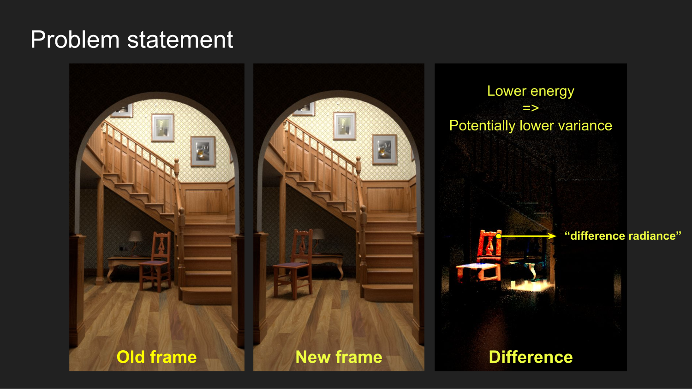
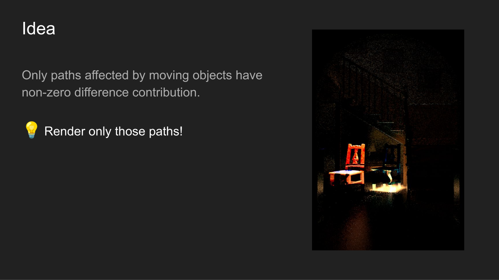
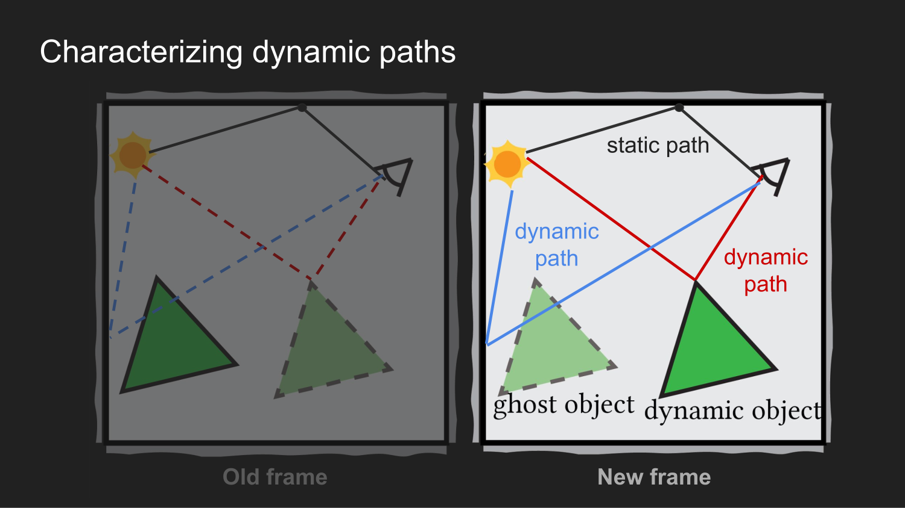
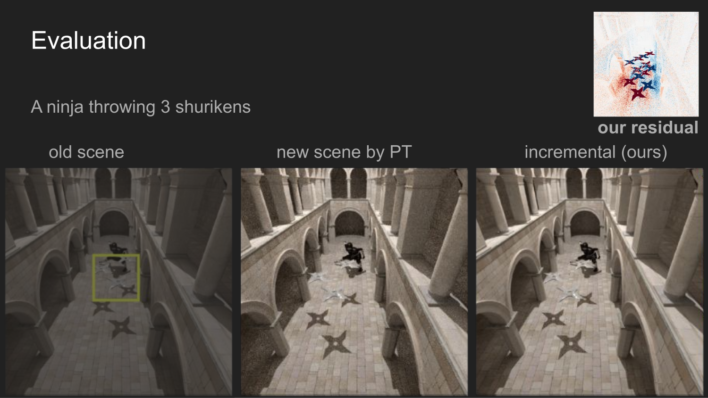
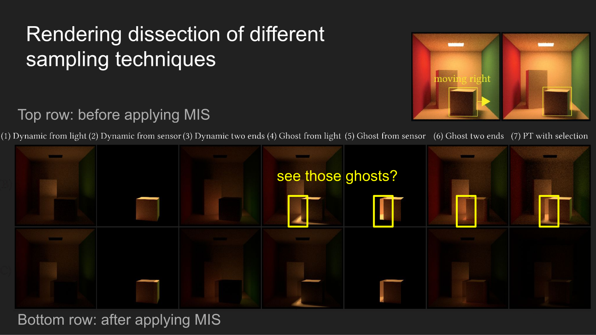

Find dynamic paths directly
Start from the moving object or its ghost surface. This guarantees a dynamic path instead of waiting for an ordinary camera or light path to hit the edited region.
Write the new image as the old image plus a residual. Then spend samples on paths affected by the edit instead of tracing the unchanged scene again.
Before my PhD, I worked on an in-house offline renderer for interior design. One day, I was browsing our company database and found piles of images that artists had discarded after changing a scene design. Most of those renderings were simply wasted. That made me wonder whether we could reuse them when the scene changed instead of rendering the next image from scratch.
The same pattern appears far beyond interior design. In movies, animation, and interactive scene design, a frame often differs from the previous one in only a small region. Path tracing ignores that fact and starts over. The image difference has much lower energy than the full image, but only if we can estimate it without wasting samples on paths whose contribution is exactly zero.

A path is dynamic when it contains a vertex on a moving object or an edge that crosses the object's old, ghost position. Every other path cancels in the residual integral. This turns re-rendering into a smaller sampling problem.


Start from the moving object or its ghost surface. This guarantees a dynamic path instead of waiting for an ordinary camera or light path to hit the edited region.
Path and shift mappings connect samples in the old and new scenes. A large part of this work went into designing, deriving, and testing mappings tailored to moving geometry.
Sampling an affected path is only half of the problem. We still need to evaluate corresponding paths in the old and new scenes. Dynamic geometry makes this difficult: a path can hit the moved object, cross its ghost position, become occluded, or diverge after the edit.
We spent substantial effort on path mappings related to shift mappings in gradient-domain rendering. We extended existing operators to dynamic scenes, introduced mappings tailored to our samplers, and used reconnection, rejection, and two-way mapping to keep the estimator correlated and unbiased. We call them path mappings because the mapped path is not produced by shifting the target pixel.
The operators, Jacobians, and failure cases are detailed in Section 5 of the paper.
We combine dynamic and ghost sampling techniques with multiple importance sampling, estimate the signed residual, and add it to the old frame. The framework also handles material edits as a simpler case where the dynamic and ghost objects coincide.


The method is strongest when the edit occupies a small part of path space. Each limitation also points to an open problem.
Feel free to drop me an email if you are interested in any of these directions.
Conventional rendering techniques are primarily designed and optimized for single-frame rendering. In practical applications, such as scene editing and animation rendering, users frequently encounter scenes where only a small portion is modified between consecutive frames. In this paper, we develop a novel approach to incremental re-rendering of scenes with dynamic objects, where only a small part of a scene moves from one frame to the next. We formulate the difference (or residual) in the image between two frames as a (correlated) light-transport integral which we call the residual path integral. Efficient numerical solution of this integral then involves (1) devising importance sampling strategies to focus on paths with non-zero residual-transport contributions and (2) choosing appropriate mappings between the native path spaces of the two frames. We introduce a set of path importance sampling strategies that trace from the moving object(s) which are the sources of residual energy. We explore path mapping strategies that generalize those from gradient-domain path tracing to our importance sampling techniques specially for dynamic scenes. Additionally, our formulation can be applied to material editing as a simpler special case. We demonstrate speed-ups over previous correlated sampling of path differences and over rendering the new frame independently. Our formulation brings new insights into the re-rendering problem and paves the way for devising new types of sampling techniques and path mappings with different trade-offs.
@article{Xu:2023:ResidualPathIntegral,
author = {Bing Xu and Tzu-Mao Li and Iliyan Georgiev and Trevor Hedstrom and Ravi Ramamoorthi},
title = {Residual Path Integrals for Re-rendering},
journal = {Computer Graphics Forum (Proceedings of EGSR)},
year = {2024},
volume = {43},
number = {4}
}This work was funded in part by NSF grants 2105806, 2212085, 2110409, gifts from Adobe, Google, the Ronald L. Graham Chair and the UC San Diego Center for Visual Computing. We especially thank Shilin Zhu for countless discussions in the early stages of this project. We thank Rui Tang, Lifan Wu, Ling-Qi Yan, Fujun Luan, Alexandr Kuznetsov, Yash Belhe for earlier discussions; Xuanda Yang, Yang Zhou for later performance discussions; Varun Munagala for early visualization experiments, and the anonymous reviewers for their constructive feedback. Ninja model is modified from the model by blendermagician on Blendswap; Shuriken model is created by RadialRonnie; Book model is created by AnyRPG and Lamp model is modified from the original one created by Manan Dhiman. Sponza model courtesy of Marko Dabrovic and Mihovil Odak. Other scenes courtesy of Benedikt Bitterli.